Giới thiệu chung
Quản lý tập tin và thư mục khoa học là kỹ năng số nền tảng đối với mọi lập trình viên. Mục tiêu của bài tập này là giúp người học làm quen với hệ thống tập tin trên hệ điều hành macOS, thiết lập quy tắc đặt tên tệp nhất quán, tạo cây thư mục tối ưu cho việc học tập và sử dụng dòng lệnh Terminal cơ bản.
Hệ điều hành sử dụng: macOS
Các bước thực hiện chi tiết
1. Mở Finder
Tìm biểu tượng Finder trên thanh Dock (biểu tượng mặt cười màu xanh dương hai mặt đặc trưng của hệ điều hành macOS).
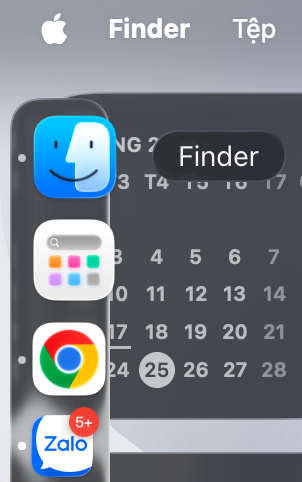
Hình 1.1: Biểu tượng Finder trên thanh Dock macOS
2. Truy cập thư mục Tài liệu
Tìm đến mục Tài liệu (Documents) ở thư mục Home hoặc trên thanh Sidebar của Finder, sau đó nhấn đúp chuột để mở thư mục.
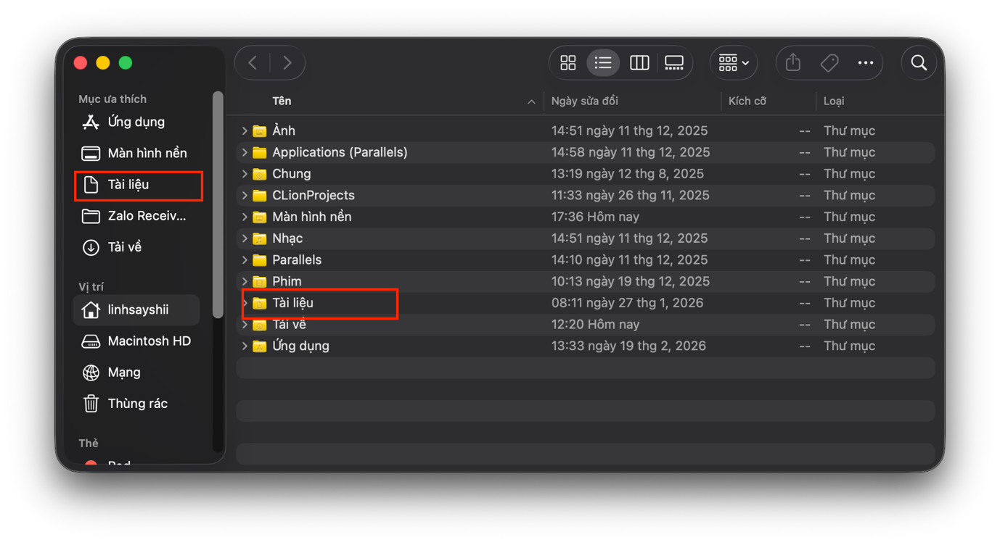
Hình 1.2: Truy cập thư mục Documents
3. Tạo thư mục mới & Đặt tên
Nhấp chuột phải vào không gian trống hoặc nhấn vào biểu tượng dấu 3 chấm ở góc trên bên phải Finder và chọn Thư mục mới (New Folder).
Đặt tên thư mục theo cú pháp: ThucHanh_HoangVietLinh.
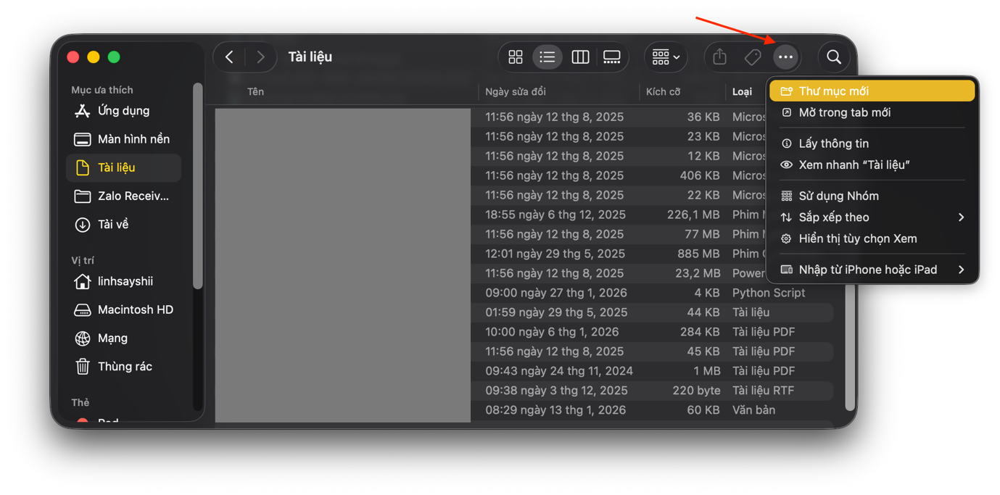
Hình 1.3: Tạo thư mục thực hành cá nhân
4. Vào thư mục vừa tạo
Nhấp đúp chuột để mở thư mục ThucHanh_HoangVietLinh vừa thiết lập.
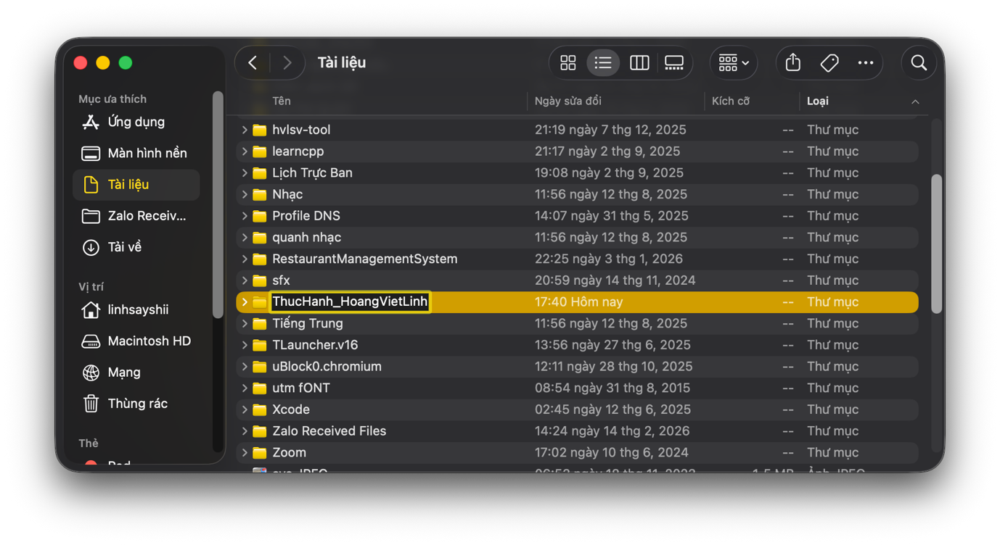
Hình 1.4: Thư mục thực hành trống ban đầu
5. Tạo tệp tin văn bản bằng Terminal
Mặc định trên macOS, Finder sẽ không hỗ trợ phím tắt nhanh để tạo tệp tin văn bản .txt trực tiếp.
Do đó, chúng ta sẽ mở ứng dụng Terminal và sử dụng dòng lệnh:
# Di chuyển vào thư mục thực hành
cd ~/Documents/ThucHanh_HoangVietLinh
# Tạo file văn bản mới
touch GhiChu.txt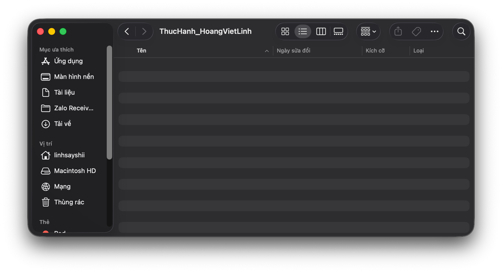
Hình 1.5: Sử dụng các câu lệnh Terminal để tạo tệp
Sau khi chạy lệnh, file GhiChu.txt sẽ hiển thị ngay trong thư mục của bạn:
Hình 1.6: File GhiChu.txt hiển thị trong Finder
6. Đổi tên tệp tin
Nhấp chuột phải vào file GhiChu.txt, chọn Đổi tên (Rename) (hoặc nhấn phím Enter trên tệp tin), đổi tên thành GhiChuQuanTrong.txt.
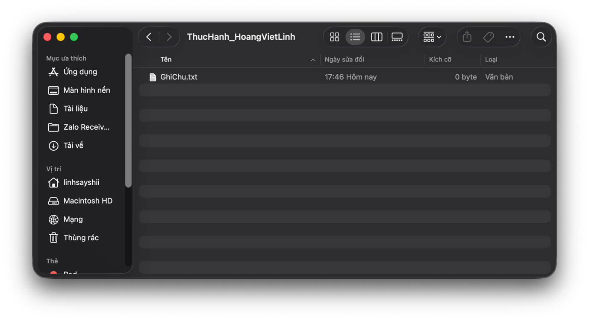
Hình 1.7: File sau khi đổi tên thành GhiChuQuanTrong.txt
7. Tạo các thư mục con
Tạo thêm hai thư mục con bên trong thư mục thực hành chính tên là Tailieu và BaoCao.
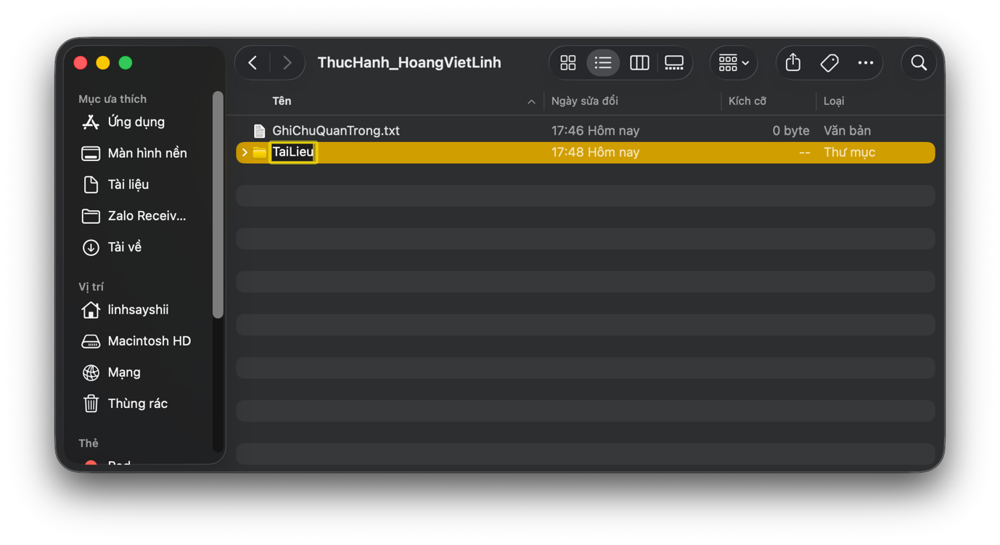
Hình 1.8: Thư mục Tailieu
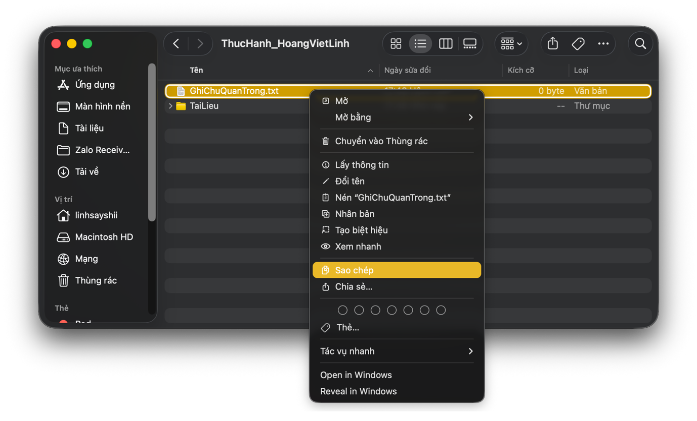
Hình 1.9: Thư mục BaoCao
8. Sao chép tệp tin (Copy)
Nhấp chuột phải vào file GhiChuQuanTrong.txt chọn Sao chép (Copy) (hoặc tổ hợp phím Command + C).
Mở thư mục Tailieu ra, chuột phải chọn Dán mục (Paste Item) (hoặc tổ hợp phím Command + V).
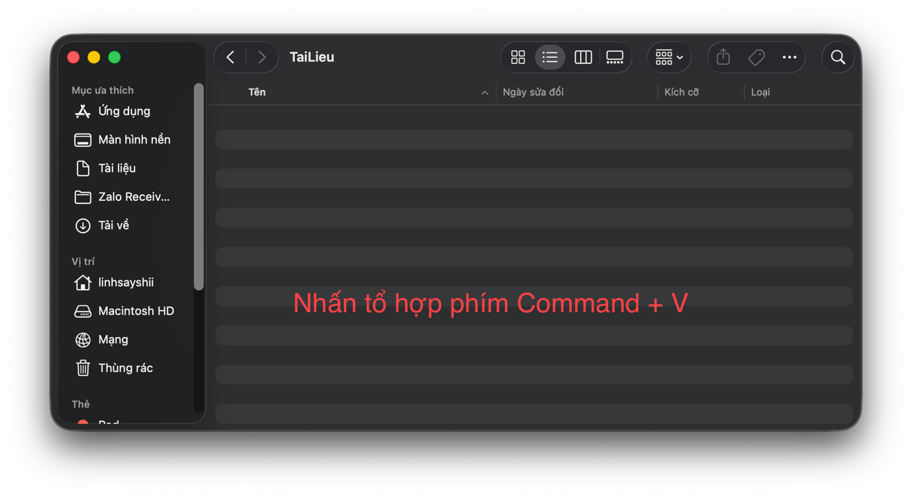
Hình 1.10: Bản sao tệp tin trong thư mục Tailieu
9. Di chuyển tệp tin (Move)
Tạo một file mới tên là DiChuyen.txt bằng Terminal.
Sau đó, tiến hành kéo và thả tệp tin này trực tiếp vào thư mục BaoCao để thực hiện thao tác di chuyển tệp.
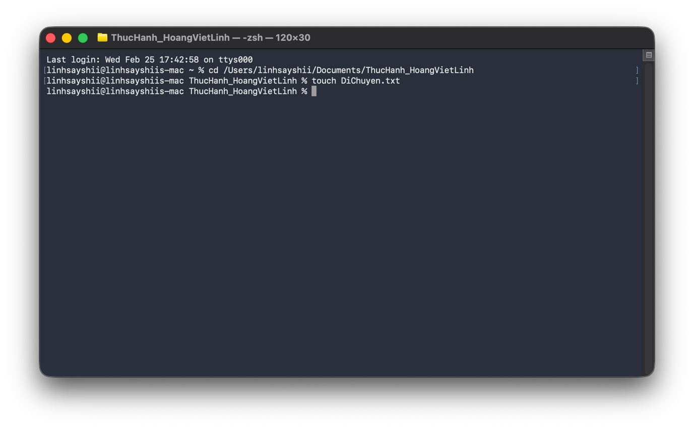
Hình 1.11: Di chuyển tệp tin sang thư mục BaoCao
10. Xóa tệp tin (Delete)
Chuột phải vào tệp tin DiChuyen.txt trong thư mục BaoCao và chọn Chuyển vào Thùng rác (Move to Trash) (hoặc nhấn Command + Delete).
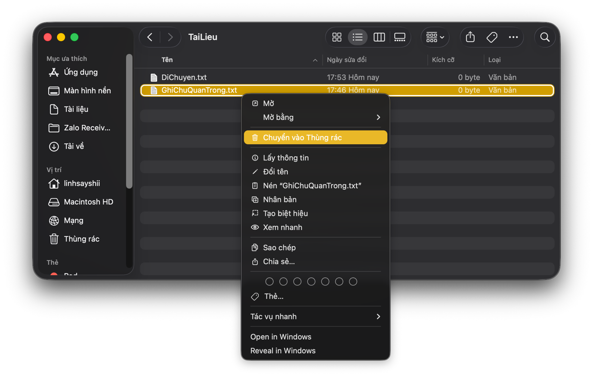
Hình 1.12: Xóa tệp tin khỏi thư mục
11. Xóa vĩnh viễn tệp tin
Nhấp vào Thùng rác (Trash) ở góc Dock, chọn file và nhấn tổ hợp phím tắt trên macOS: Command + Option + Delete để xóa vĩnh viễn tệp tin ra khỏi bộ nhớ máy tính.
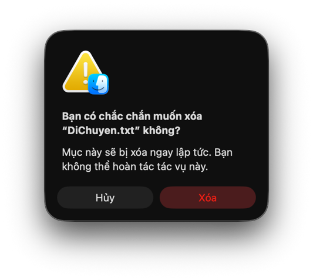
Hình 1.13: Cảnh báo xóa vĩnh viễn của hệ thống macOS
12. Khôi phục tệp tin từ Thùng rác
Nếu muốn khôi phục một tệp tin vừa xóa, mở Thùng rác, nhấp chuột phải vào tệp tin cần lấy lại và chọn Đưa trở lại (Put Back). Tệp tin sẽ tự động quay trở về vị trí thư mục gốc trước khi bị xóa.
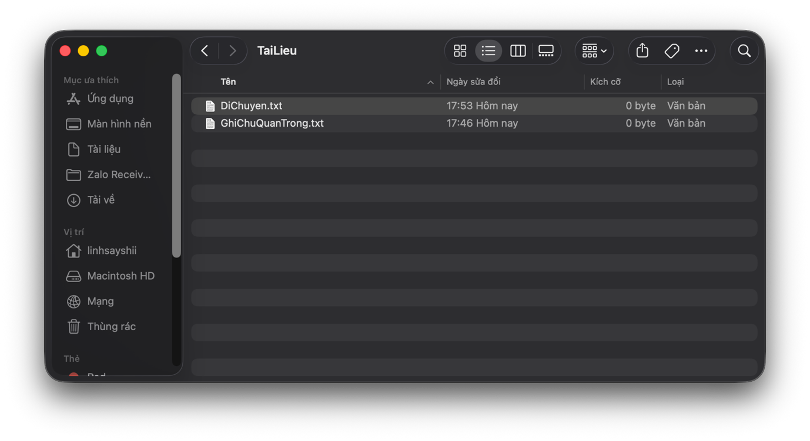
Hình 1.14: Menu khôi phục tệp tin (Put Back) trên macOS